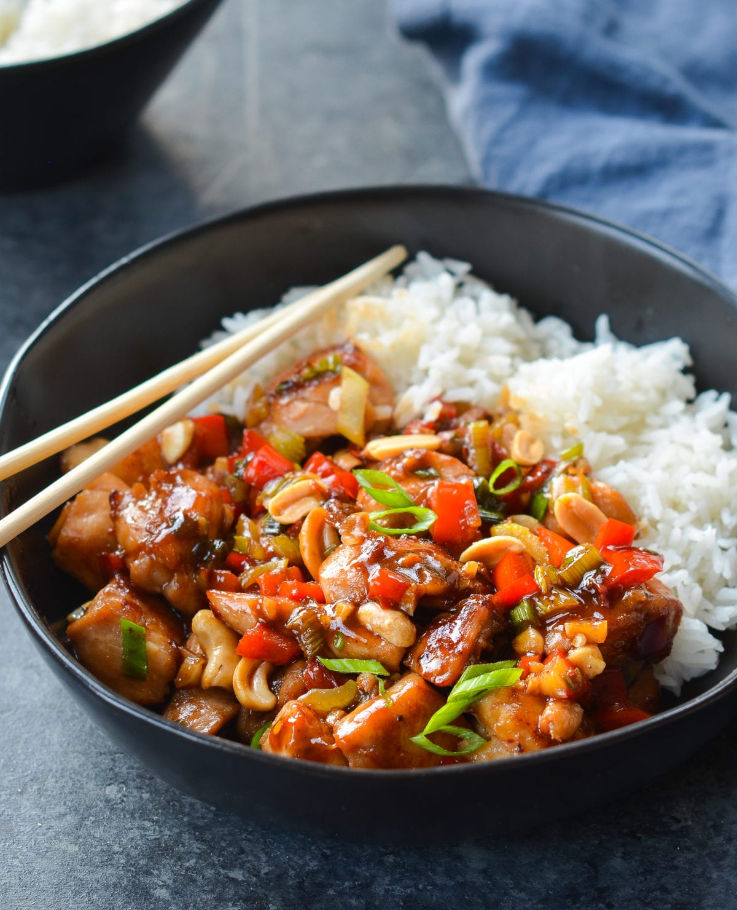

Kung Pao Chicken Recipe

Description
Kung Pao chicken (a.k.a. Gong Bao or Kung Po) is a stir-fried Chinese dish that consists of cubed chicken in a sweet, spicy, and savory sauce. It originated in southwestern China in the early 1800s. This Kung Pao chicken recipe consists of cubed chicken breasts soaked in a marinade (made with cornstarch, water, white wine, soy sauce, and sesame oil) and tossed in a sweet-savory sauce (made with hot chili paste, brown sugar, white vinegar, water chestnuts, peanuts, onions, and garlic). Source: All Recipes
Ingredients
- 2 tablespoons cornstarch, dissolved in 2 tablespoons water
- 2 tablespoons white wine, divided
- 2 tablespoons soy sauce, divided
- 2 tablespoons sesame oil, divided
- 1 pound skinless, boneless chicken breast halves - cut into chunks
- 1 ounce hot chili paste
- 2 teaspoons brown sugar
- 1 teaspoon distilled white vinegar
- 1 (8 ounce) can water chestnuts
- 4 ounces chopped peanuts
- 4 green onions, chopped
- 1 tablespoon chopped garlic
Steps
- Make the marinade, then marinate chicken in the fridge.
- Make the chili paste-brown sugar sauce. Add the remaining ingredients and cook.
- Cook the marinated chicken in a skillet until it's cooked through.
- Add the chicken to the chili paste-brown sugar sauce.
- Continue cooking until the sauce thickens.